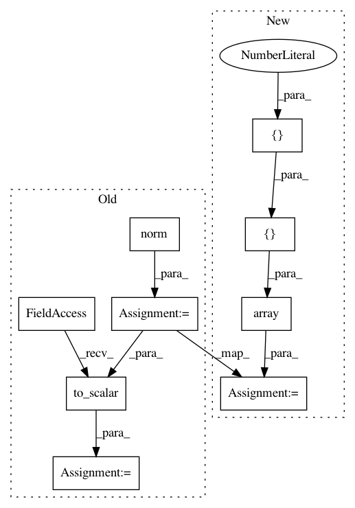

ac0fd972b21cacd11fe7106cf8d1156924d2e701,tests/test_euclidean_space.py,TestEuclideanSpaceMethods,test_norm_vectorization,#TestEuclideanSpaceMethods#,49
Before Change
result = self.metric.norm(n_points)
expected = gs.linalg.norm(n_points, axis=1)
expected = helper.to_scalar(expected)
with self.session():
self.assertAllClose(gs.shape(result), (n_samples, 1))
self.assertAllClose(result, expected)
After Change
result = self.metric.norm(n_points)
expected = gs.array([[2.2360679775], [4.472135955], [5.09901951359]])
with self.session():
self.assertAllClose(gs.shape(result), (n_samples, 1))
self.assertAllClose(result, expected)
In pattern: SUPERPATTERN
Frequency: 3
Non-data size: 9
Instances
Project Name: geomstats/geomstats
Commit Name: ac0fd972b21cacd11fe7106cf8d1156924d2e701
Time: 2018-12-12
Author: ninamio78@gmail.com
File Name: tests/test_euclidean_space.py
Class Name: TestEuclideanSpaceMethods
Method Name: test_norm_vectorization
Project Name: geomstats/geomstats
Commit Name: ac0fd972b21cacd11fe7106cf8d1156924d2e701
Time: 2018-12-12
Author: ninamio78@gmail.com
File Name: tests/test_euclidean_space.py
Class Name: TestEuclideanSpaceMethods
Method Name: test_squared_norm_vectorization
Project Name: geomstats/geomstats
Commit Name: 35e6ce06a3ef692f90166999e40a638035bb18b8
Time: 2018-12-12
Author: ninamio78@gmail.com
File Name: tests/test_euclidean_space.py
Class Name: TestEuclideanSpaceMethods
Method Name: test_squared_norm